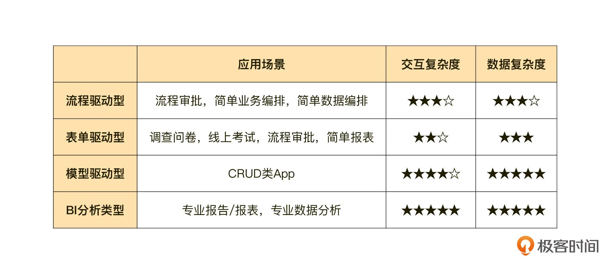
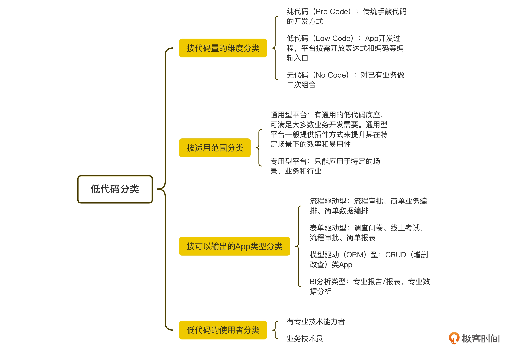
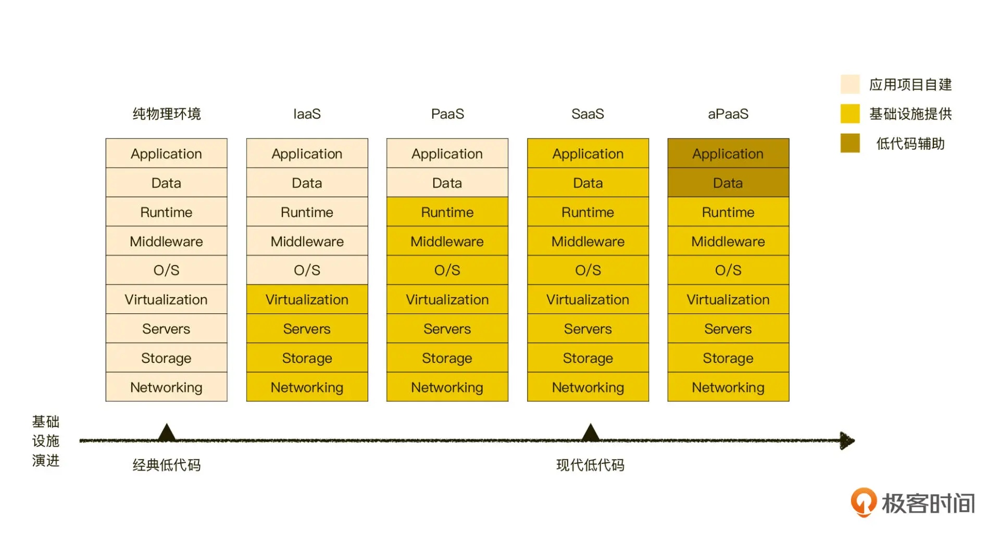
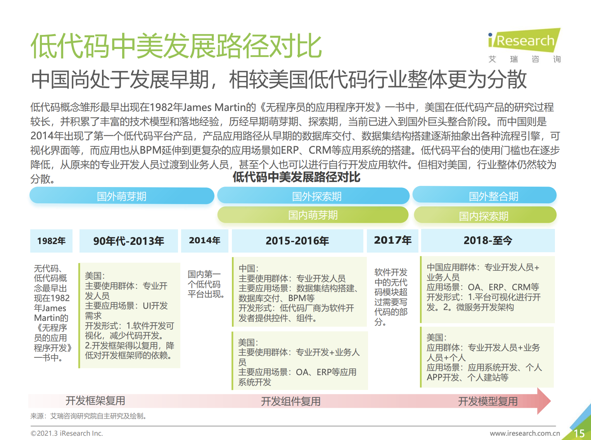
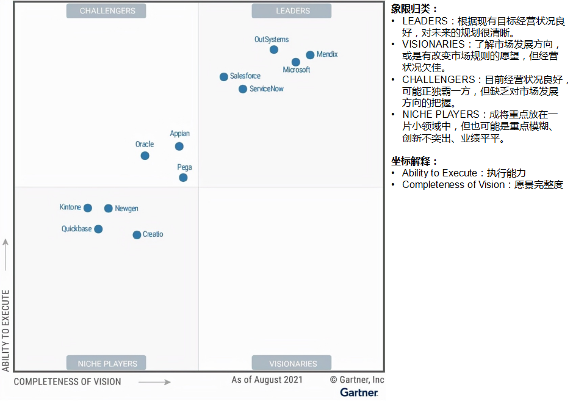
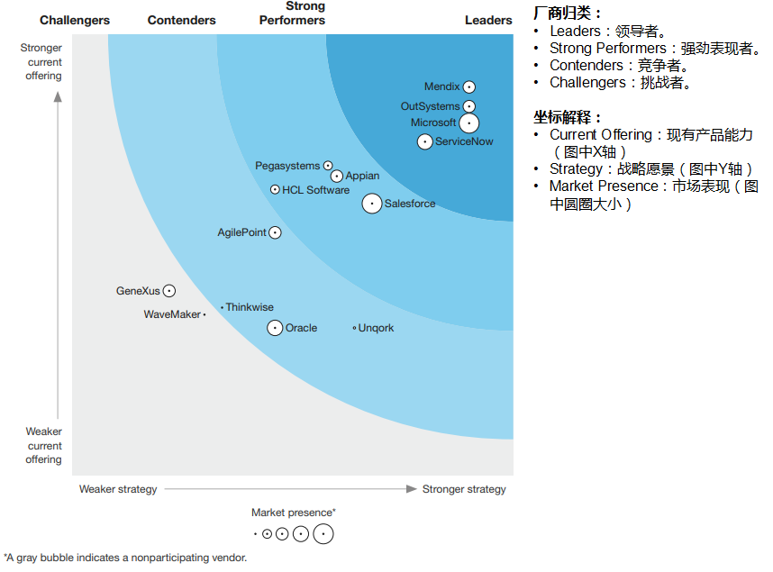
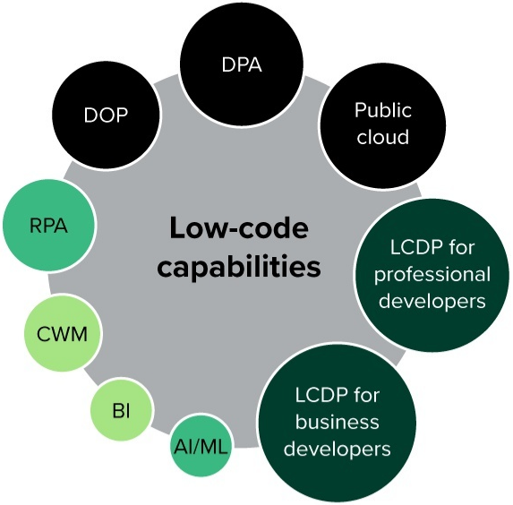
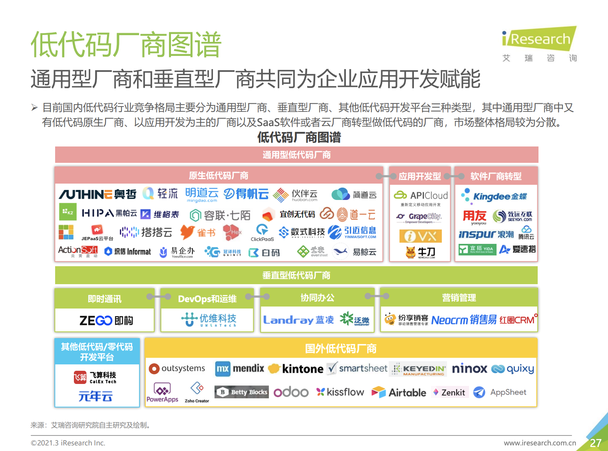

- 00 开篇词｜抛开争论，先来看看真正的低代码.md
- 01｜低代码平台到底是什么样的？.md
- 02｜低代码到底是银弹，还是行业毒瘤？.md
- 03｜低代码的天花板：一个完备的低代码平台应该具备哪些条件？.md
- 04｜演进策略：先发展通用能力还是先满足业务需求？.md
- 05｜基础设施 ：启动低代码平台研发之前，你需要有什么家底？.md
- 06｜踏出新手村便遭遇大Boss：如何架构低代码的引擎？.md
- 07｜结构化代码生成法：代码如何生成代码？.md
- 08｜布局编辑器：如何做到鱼和熊掌兼得？.md
- 09｜属性编辑器：如何解除Web组件属性与编辑器的耦合？.md
- 10 可视化编程：如何有效降低App前后端逻辑开发的技能门槛？.md
- 11｜亦敌亦友：Low Code与Pro Code混合使用怎样实现？.md
- 12 业务数据：再好的App，没有数据也是白搭.md
- 13｜多人协同编辑：野百合的春天为啥来得这么晚？.md
- 14｜编辑历史：是对Git做改造，还是另辟蹊径？.md
- 15｜低代码平台应该优先覆盖应用研发生命周期中的哪些功能？.md
- 16｜扩展与定制：如何实现插件系统并形成生态圈？.md
- 17｜兼容性问题：如何有效发现兼容性问题？.md
- 18｜兼容性问题：如何有效解决兼容性问题？.md
- 总结与展望｜低代码之路，我们才刚刚开始.md
01｜低代码平台到底是什么样的？
今天我们正式开始了对低代码的学习。与某种具体技术不同，对于低代码的概念，业界至今没有达成一致意见（我估计以后也不会，这是低代码的职能所决定的）。
但作为低代码的学习者，甚至是架构者，我们需要对低代码平台到底是什么有一个清晰且深入的了解。这也就是我们第一节课的任务。这节课里，我会通过对低代码平台进行归类带你厘清低代码的概念，并带你分析当前低代码的发展现状，让你在脑海里建立起对低代码的直观印象。
正如开篇词所说，我们这门课的所有内容都侧重于低代码的架构、策略和技术的实现。所以，对低代码是啥理解得越清楚，相应地，你就越容易理解我所作出的架构和策略选择，以及为啥要采用特定的技术实现选型。反之，在概念理解有误的情况下，后续的内容有可能使你陷入目标与执行相互矛盾的困境，难以自拔。
什么是低代码
要讲清楚一个模糊的概念，一个有效的手段就是先应该尝试对它，以及相关的概念进行归类，然后比对，从比对中得出关键差异。
但要对低代码做分类，并不容易。由于低代码概念和内涵未达成一致，业界对它进行归类的方式也多种多样。这里，我以我理解的低代码的几个重要特征作为维度，对低代码进行归类，同时你也能通过这些分析，了解我们这门课要实现的低代码平台到底是啥样的。
按代码量的维度来分类
这个维度下，App 的开发模式可以分为三种：纯代码（Pro Code）、低代码（Low Code）、无代码（No Code）。
这三者有着巨大的差别，我们需要非常准确地将它们分开。纯代码是这个维度下的一个基准概念，它指的是用传统的手工编码的模式开发应用。而低代码和无代码比较容易搞混。
从中英文字面上说，无代码意味着 App 的开发过程没有代码参与。但是这样的理解比较粗浅，为了获取更加权威的理解，我尝试从头部分析机构 Forrester 和 Gartner 发布的报告中，查找与无代码相关的调查报告，但一无所获，不知道是不是这些头部机构并不认可无代码这个概念。
低代码模式下的 App 开发过程需要有代码参与，特别是面对一些复杂的业务逻辑的时候，通过表达式或者直接编码的方式来表达，反而更加清晰。而无代码模式开发 App 的全过程，没有任何代码的参与，不仅是从开发者角度看是这样的，从无代码内部的实现方式看，也是这样的。
严格来说，把采用无代码模式生成 App 的过程称为开发是不恰当的，因为它只是对已有原子业务能力进行二次组合，形成具有特定功能的新业务而已。因此从这个角度来说，低代码和无代码完全不是一种东西，切不可将这两者混为一谈。
但有一个情况非常容易混淆低代码和无代码。当低代码的成熟度到一定高度时，在某些细分场合下也可以实现零代码开发。在这个情况下，从 App 开发过程的表现看，这二者差异微小，此时最容易将两者混淆。当然，我们也不排除一些低代码解决方案提供商为了夸大其低代码的效果，故意将二者混为一谈，把无代码当作一个噱头来宣传。实际上，低代码模式要将一个场景做到零代码，难度非常大，并且有诸多业务前提。
在代码量这个维度下，我们专栏所说的低代码是指这 3 个分类中的“低代码（Low Code）”这一类。
按适用范围的维度来分类
这个维度下，低代码平台可以分为专用型和通用型两种。
所谓通用，指的是开发平台不事先假设自身只能应用在特定的场景、业务、行业，而是具有广泛的适用范围。
具有这样特征的开发平台往往需要有一个通用的底座。这个底座是纯技术性的，它不依赖于特定的业务功能，而只与业界广泛使用的标准协议、技术标准产生耦合。不过，这个时候，我们只有深入平台架构实现的细节，才能判断平台到底是低代码还是无代码，这就导致平台的使用者难以甄别（注意，我这里的目的不是想告诉你如何甄别，而是为了告诉你这门课所说的低代码平台具有的特征）。
但是，通用是有代价的，越通用就往往意味着在特定业务场景下的效率越低，越通用就意味着默认配置里的个性化信息越少，为形成某个具体场景所需的配置量就越大，从这个具体场景的角度看，效率相应也就越低。
所以通用型的低代码平台往往伴生着这个特征：有相对完善的有插件（或类似）机制。这一点相对来说比较好识别，相对高通用性的技术底座来说，插件是廉价的，因此通用性低代码平台往往会有数量众多的插件。这些插件可以定制出各式各样具体的业务场景，通过插件的定制化和扩展性来解决效率问题。
这个维度下，这门课所说的低代码指的是通用型开发平台，它具有一个通用性非常高的底座，和一个相对完善的插件机制。
按输出的 App 的类型来分类
其实，在一个具有较高通用适用范围的低代码平台来说，按照输出 App 类型分类几乎是没有意义的。之所以不得不按输出 App 类型分类，是因为开发平台的通用性不足，而在有了足够高的通用适用性之后，支持开发各种类型 App 的问题，就不在于能不能了，而只是时间问题。
尽管我们这门课所说的低代码指的是“通用型”这一类，但这并不影响我们看看现在业界其他低代码平台都可以输出哪些类型的 App，大概有流程驱动型、表单驱动型、模型驱动（ORM）型、BI 分析类型这几种，具体你可以看看这张表格（5 星为满分）：

这里，我主要给你区分一下表单驱动型和模型驱动型这两个类型，因为它们比较容易混淆。
所谓模型驱动型 App，它的模型指的是数据模型，或是数据关系。而这里所说的关系，指的就是符合三范式的关系型数据库的关系，也就是你数据库中各个数据表之间的关系，比如表 1 的 a 字段和表 2 的 a 字段是相同的，但与表 3 中的 a 字段没有关系。在正确配置了各种数据关系之后（这个过程一般称为数据建模），页面上就可以很容易创建各种 CRUD（增删改查）类 App 了。
表单类 App 则是仅以数据为中心，创造各种表单来收集或呈现数据。这里的关键点在于，这类 App 并不关注数据之间的关系。所以表单类的 App 非常容易形成数据孤岛，并存在大量冗余数据，以及大量数据不一致性等问题。如果我们将表单类 App 做得比较完善的话，实际上它就会逐渐转型成模型驱动类 App 了。在完成数据建模之后，我们就分不清楚它到底是模型驱动还是表单驱动了，差异只是前端是用表单展示，还是表格展示而已。
按使用者的类型来分类
如果按照使用者的类型进行分类，我们可以将开发平台的使用者分为 3 类：专业技术人员，业务技术员，相关无专业技能人员。
这里所说的业务技术员是一种正在兴起的角色，它是指构建供内部和外部业务使用的技术或分析功能的非 IT 部门员工。他们担任着装备和赋能非 IT 资源以构建数字化能力的战略角色。
根据 Gartner 的研究：41% 的员工可以被称为业务技术人员，不过这一比例在不同行业可能存在很大差异。例如在政府部门等技术密集度较低的行业，这一比例接近 25%，但在能源等 IT 密集型行业，这一比例接近 50%。
多数的无代码开发平台将业务技术员作为主要的用户群，为他们提供对已有业务的二次组合为主的基础开发能力，一般具有专业技能的开发人员是不会使用无代码开发平台的，因为专业技能者要面对的问题域已经大大超出了无代码平台的能力范围。
而低代码开发平台一般会将专业技术人员和业务技术员同时作为他们的客户群，并以专业技术人员为主要用户群，业务技术员为次要用户群。
随着低代码开发平台的成熟度上升，业务技术员用户群的占比会有所上升。因为成熟度高的低代码平台，不仅有各式各样的可视化工具来降低业务研发的难度和代码量，同时对业务研发生命周期各个环节的覆盖也会越来越完整。从开发到测试，从测试到上线，再到高容错运行时自动化部署 / 恢复、运行时自动化运维等各个环节的可视化、自动化完成，这为无 IT 技能的业务技术员独立开发提供了可能性。同时，越发完善的可视化自动化能力不仅会牢牢抓住已有的专业技能用户，还会吸引更多的专业技能用户的加入。
这个维度下，这门课所说的低代码是以专业技术人员为主要用户群的一类平台。不过，在写这篇文稿的时候，我负责的低代码平台正在努力将业务技术员纳入到它的用户群中，但是这项工作才刚起步不久，当前尚没有特别成熟的经验可以分享。但这是一个动态专栏，在未来几年还会保持更新，我会在合适时机，及时把我在拓展更多用户群方面的经验分享给你。

现在我们来总结一下，我们这门课要实现的低代码平台到底是怎么样的。它是一个以专业技术人员为主要用户群的通用型低代码平台，它会有一个通用性非常高的底座，和一个相对完善的插件机制。
我这里还要再解释一下，在后续的内容中，我可能还会提到低代码工具和低代码平台，对于这两个概念，我所指的内涵是一致的，区别就在于规模和成熟度。低代码工具指代规模较小、成熟度较低的低代码实现，而低代码平台则指代规模较大、功能较完善、程度较高的低代码实现。
了解了行业内对低代码的几个分类，以及我们这门课的低代码平台的定义后，我们再来简单看看低代码的历史演进和现状，让你对低代码和低代码行业有更进一步的理解。
低代码的发展
在低代码的发展上，我们可以从基础设施的演进、时间和地域，以及中台的演进这三个方面一探究竟。
我们先从基础设施演进看低代码的发展，你可以先看看下面这张图：

长久以来，软件的基础设施都是纯物理设备，当虚拟技术引进后，IaaS（基础设施即服务）时代就开始了。紧随着虚拟技术继续蓬勃发展，没过多久，软件技术便历经了 PaaS（平台即服务）时代、SaaS（软件即服务）时代。关于这几个概念更具体的解释，你可以看下补充材料的内容。
SaaS 类产品高度封装的软件服务为行业提供了巨大便利的同时，人们也渐渐发现这种形式的短板：定制性太弱。因此在 SaaS 的基础上，又演进出了一种被称为 aPaaS 的软件服务体系。
根据 Gartner 的说法，aPaaS 是应用程序平台即服务的缩写，它是一种云服务，可为应用程序服务提供开发和部署环境。aPaaS 平台提供的功能包括：迭代构建应用程序、即时提供应用软件、按需扩展应用程序，以及集成应用程序与其他服务。
很明显，Gartner 把这里的 a 作为 application 理解了。但我个人认为，这里的 a 当做 ability 来理解更为恰当，借用文言文的使动用法，将它翻译为赋能。因为很明显的，相比其他架构，aPaaS 体系多出了开发和部署应用程序的能力，也就是说，aPaaS 赋予了原来的软件服务体系开发和部署的能力。
**我们再换个角度，从时间和地域来看低代码的发展。**下面这张来自艾瑞咨询的图片总结了这个过程，图中信息量比较大，你可以点开仔细阅读。

数据来艾瑞咨询2021年低代码行业研究报告
我们可以从这组比对数据中明显看到，国内的低代码平台要落后于美国一个时代。现在低代码头部解决方案中已经有类似 OutSystem、Microsoft 这样的通用型低代码巨无霸，而国内多数提供商还在探索如何有效地为某个垂直行业、细分领域提供低代码服务。但这对你我这样的低代码人来说，实际上是一个好事，这仍是一片蓝海，大有可为。
**第三种角度就是从中台演进来看低代码的发展。**这里你可能会觉得很奇怪，为啥低代码又和中台扯到一起了呢？
这是因为，低代码可以将多个“烟囱系统”归整为一个集大成者，更灵活敏捷地创建中台架构。在传统的企业系统中，每个部门有不同的系统需求，于是会各自采购自己的系统。但这些系统彼此孤立，独立运作，导致企业采购的软件系统冗杂。而低代码平台能让绝大部分部门的业务系统都能在一个平台里搭建，彼此联系，打破信息系统孤岛，同时降本增效，提升内部生产力。
低代码有助于横向打破传统企业的烟囱系统，将它们串联到一起，这与中台的目标不约而同。此外，低代码对外赋能的职能，也是中台建设目标之一。因此中台的发展过程，有相当一部分线路与低代码是重合的，二者可以起到相互促进，良性共生的关系。所以，如果你所在的企业同时在架构中台和低代码，不妨尝试将它们放到一起来考虑。
行业状态速读
了解了低代码的发展和演进之后，作为低代码的研究者，我们总得关心下当前低代码的行业现状吧？
不过，网上这方面的信息实在太多了，多数说的有鼻子有眼，但不知道真假，所以我只看专业调查机构输出的报告。其中我主要关注 Forrester 和 Gartner，以及国内的艾瑞咨询，相关的报告链接我都统一附在了文末的补充材料中。
在这么多报告里面，我首先要向你推荐的就是 Gartner 绘制的关于低代码的魔力四象限报告，关键部分就是下面这张图，概括性非常强。

作为低代码的实现者，一般看这种报告都是以竞品调研为目的的，因此我们一般只研究 Leader 象限里的提供商就可以了。Leaders 这个象限显示的是技术能力较强、对未来的规划很清晰的厂商，其产品被市场广泛认可，对我们有极强的参考价值。
其次我想向你推荐的是 Forrester 的 Forrester Wave™ 报告。与分析 Garter 的魔力四象限相似，我们仍以 Leader 这一波里的厂家作为我们的调研对象。与魔力四象限的结果比对，你发现了啥？

两家机构对低代码的 Leaders 给出了几乎一样的结论，对吧？在 Leaders 里，头部机构取得了一致意见。这两份报告为我们低代码平台的竞品调研给出了一个非常明确的指引，所以如果你现在还在头疼不知道如何下手做调研的话，他们就是极佳的研究和参考对象。
那么国内的厂商是啥样的状态呢？
我同样有两份报告可以推荐给你：一个来自 Forrester 的报告《The State Of Low-Code Platforms In China》（下文简称中国报告），另一个来自艾瑞咨询的《艾瑞咨询 -2021 年低代码行业研究报告》（下文简称艾瑞报告），你可以在这一讲的补充材料中找到原文。
在《中国报告》中，Forrester 第一次将视角聚焦在中国，它认为，低代码目前在国内主要应用于银行、保险、零售、医疗、政府、制造、电信和建筑行业。Forrester 认为，国内低代码目前主要集中在如下 9 个领域，分别有：

而《艾瑞报告》的信息量就更大了，主要包含了概念界定、应用场景、竞争要素、市场规模、趋势洞察四大块的内容。下图是《艾瑞报告》绘制的低代码厂商图谱，非常概要地整理出了国内外低代码厂商的分类。

大体上，《艾瑞报告》把低代码厂商分成了通用型和垂直型两种，垂直型和我前文所说的专用型是类似的，均指只能应用在某个业务领域的低代码解决方案，无法运用到其他领域。
无论你是要做竞调，还是打算采购，这个图都可以提供不错的指引。
大小厂商这么多，也从一个侧面反映了低代码在国内的发展仍处于早期的状态，按照“惯例”，风口褪去后，各个厂商会快速聚集，要么大鱼吃小鱼、要么抱团取暖，形成寡头化的局面，当前还处于“百花齐放”的状态，说明低代码仍处于投资风口，风投时不时来“奶”上一口，所以大家都还能坚持得住。
不过，这份《艾瑞报告》是 2021 年 3 月出的，有点老了。目前我和负责竞调的团队还没找到新版，一旦获得一手信息，在商业合规的前提下，我会在这门课的动态更新部分中第一时间分享给你。
小结
这一讲从多个维度对低代码做了分类，并简要讨论了各个分类的低代码所具有的特征，这些分类方法和特征的讨论，对帮助你理解和总结网上对低代码的各种讨论，会有莫大的帮助：
- 按代码量的维度，App 的开发模式可分为纯代码、低代码、无代码，其中低代码主要特征是 App 开发过程，平台按需开放表达式和编码等编辑入口，无代码则是对已有业务做二次组合；
- 按适用范围，低代码平台可以分为专用型和通用型，通用型平台有通用低代码底座，可满足大多数业务开发需要，通用型平台一般提供插件方式来提升其在特定场景下的效率和易用性；
- 目前各低代码平台可以输出的 App 类型汇总大概有：流程驱动型、表单驱动型、模型驱动（ORM）型、BI 分析类型，通用型低代码平台不局限输出某种类型的 App，而专用型低代码平台则一般专注其中的一种；
- 低代码平台的使用者可以分为有专业技术能力者和业务技术员，有的低代码平台同时支持两种用户同时使用，有的则专注于为其一提供服务。
更具体的你可以看下这张脑图：
现在的状况是大家把低代码当做一只大框，啥业务开发只要能少写两行代码的，都往这个框里扔，都说是低代码。这造成了不同的人带着不同的业务背景来理解低代码，进而得到差异很大的结论，甚至连啥不能算作低代码都说不清楚。我希望通过不同维度分类的方式，来帮助你对低代码的能力、职能、目标等有一定的认知。
最后的两个小节，主要是结合了我的经验，对低代码的发展和行业状态做了一些总结。当了一名数据搬运工，把我认为可信度较高、参考价值较高的几份机构调查报告汇总出来，便于你研读和参考。这部分的篇幅不长，但信息量很大，相信对你会有帮助。
思考题
除了代码量、使用范围、输出应用类型、使用者等维度之外，你认为还可以从其他哪些维度对低代码做分类？可以分为哪些类型？各有啥特点？
欢迎在留言区分享你的看法。我们下节课见。
补充材料
关于基础设施演进的几个概念：
IaaS：Infrastructure as a Service，是提供消费者处理、储存、网络以及各种基础运算资源，以部署与执行操作系统或应用程序等各种软件。
PaaS：Platform as a Service，平台即服务，将软件研发的平台做为一种服务提供给消费者。
SaaS：Software as a Service 软件即服务，也可称为“按需即用软件”（即“一经要求，即可使用”），它是一种软件交付模式。在这种交付模式中，软件仅需通过网络，不须经过传统的安装步骤即可使用，软件及其相关的数据集中托管于云端服务。用户通常使用精简客户端，一般即经由网页浏览器来访问、访问软件即服务。
aPaaS：application Platform as a Service 应用程序平台即服务的缩写，它是一种云服务，可为应用程序服务提供开发和部署环境。
关于 Gartner 的魔力四象限：把研究对象分为四类，分别是领导者，有远见者，挑战者，利基企业，通过归类可以快速了解被研究对象所在行业的状态，更多信息可以看这个文章。
关于 Forrester Wave 报告：和 Gartner 的魔力四象限相似，也是对被研究对象分成若干类，更多信息可以看这个文章。
《The Forrester Wave™: Low-Code Development Platforms For Professional Developers, Q2 2021》原文在这里。
《The Forrester Wave™: Low-Code Development Platforms For Professional Developers, Q4 2021》原文在这里。
《The State Of Low-Code Platforms In China》原文在这里。
《艾瑞咨询 -2021 年低代码行业研究报告：化繁为简》原文在这里。
© 2019 - 2023 Liangliang Lee. Powered by Vert.x and hexo-theme-book.